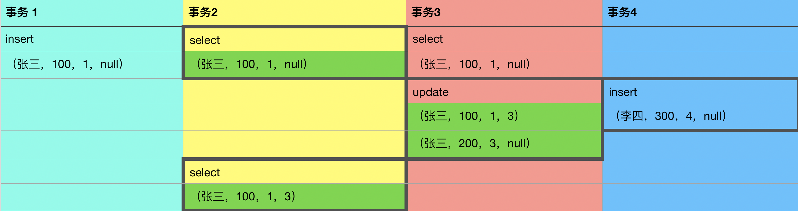
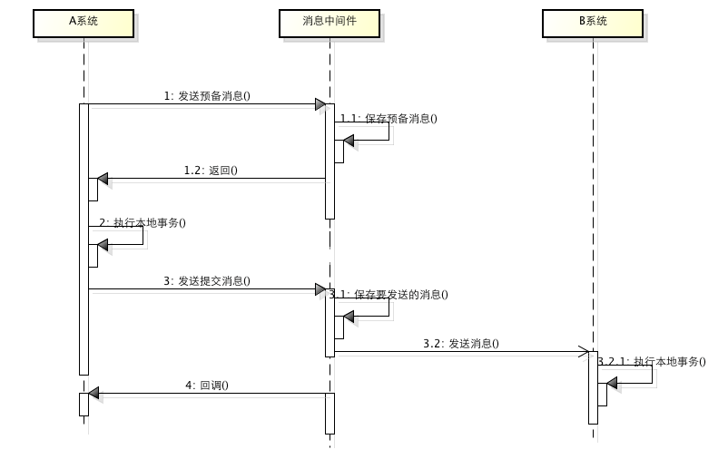

面试笔记（一）事务连环炮
1. 熟悉 MySQL 的事务么？
在 MySQL 中只有使用 Innodb 引擎才支持事务，事务用于维护数据的完整性。
事务有四个特性：原子性、一致性、隔离性、持久性
- 原子性：在同一个事务里的 SQL 要么都被执行，要么都不执行，如果某个SQL执行失败会触发回滚操作。
- 一致性：在事务开始之前和事务结束以后，数据库的完整性没有被破坏。
- 隔离性：数据库允许多个并发事务同时对其数据进行读写和修改的能力。数据库支持对不同事务的操作进行隔离，避免干扰
- 持久性：事务处理结束后，对数据的修改就是永久的，即便系统故障也不会丢失。
2. 事务的隔离级别有哪些？
事务的隔离级别有 4 个等级，分别是：读未提交（Read uncommitted）、读已提交（read committed）、可重复读（repeatable read）、串行化（Serializable）
2.1 读未提交（Read uncommitted）
一般不会使用，这种情况下会出现脏读现象，即 A、B 两个事务同时执行，A事务读到的数据可能是 B 事务没有提交的数据（脏数据）。
2.2 读已提交（read committed）
Innodb 为了解决 脏读现象，支持了对数据表和数据行进行加锁，即 B 事务更新数据时，不允许 A 事务进行更新操作。
这种情况下保证了 A 事务读到的数据都是 B 事务提交的数据，即 读已提交（read committed）。在这种情况下会出现另外一个问题，如果 A 需要读取两次数据，第一次读取后，数据被 B 事务更新了，A事务就会出现第一次和第二次读取的数据不一致，这种现象被称为不可重复读。
2.3 可重复读（repeatable read）
在读已提交（read committed） 的情况下仅仅是对 update 加了写锁，可以对 select 加读锁，即 A 事务读取的时候不允许 B 事务读取，这样就可以解决不可重复读 的问题（不过由于性能问题，Innodb没有采用这种方式）
在可重复读（repeatable read）这种隔离级别下，解决了两次读取不一致的情况。但会带来新的问题，当 A 事务在两次读取的时候，B 事务进行了 insert/delete 操作，A 事务第二次会读取出来数据条数，就会出现不一致的情况，这种情况称为幻读。
2.4 串行化（Serializable）
为了解决幻读问题，需要对读锁、写锁互斥，即加上读锁后，不允许加写锁。这种情况下就不会出现幻读现象。
（不过由于性能问题，Innodb并没有采用这种形式）。
3. Innodb 是如何解决不可重复读和幻读问题的？
是通过 MVCC（多版本并发控制）来解决的。在 InnoDB 引擎中，每一条记录会自动增加两个字段，记录了这条数据在何时被创建，另一个字段记录了这条数据在何时被删除。实际存储的并不是时间，而是事务版本号，意味着，某条记录在第几个（版本号）事务里被创建，在第几个（版本号）事务里被删除。
我们再看一下不可重复读的问题，主要原因是，在一个事务读取两次期间，另外一个事务更新了数据。如果加上了 MVCC，
在可重复读（RR）隔离级别下：
- INSERT：保存当前事务版本号为创建版本号
- DELETE：保存当前事务版本号为删除版本号
- SELECT：读取创建版本号小于当前事务版本号，并且删除版本号为空或者大于当前事务版本号的数据，
- UPDATE：插入一条新记录，保存当前事务版本号为创建版本号，并且保存当前事务版本号为原记录的删除版本号。
我们以一条记录为例，这条记录一共有两个字段，姓名和余额，第三个字段是自动添加的创建版本号，第四个是删除版本号。
事务1创建了一条记录，事务2 将进行两次查询，在第一次查询后，事务3更新了这条记录，事务2查询到的仍然是原始数据。更新后的数据与新创建的数据创建版本号均大于 2，所以 在执行 SELECT 时是无法查到的。这样就解决了不可重复读和幻读问题。

4. 数据库行锁
通过 MVCC 虽然解决了不可重复读和幻读的问题，但是读取的数据并不是实时的数据。例如在上面的例子中，事务2 第二次读取的数据并不是最新的数据（事务3更新后的数据，事务4新增的数据都没有读到）。
在某些场景下，有时候需要读取实时的数据。比如常见的 SELECT FOR UPDATE，事务2 如果第二次执行的是 UPDATE 操作，将会覆盖事务3的更新。这个时候就需要地读取到最新的数据。
Innodb 通过对数据行进行加锁，当事务2第一次读取时对数据行加锁，事务3将无法再次进行更新。这样就避免数据覆盖更新的问题。
5. Next-Key 锁
虽然数据库行锁，解决就覆盖更新的问题，但是并没有解决幻读的问题，事务2对张三的数据加了行锁，但是并不能阻止事务4插入数据，所以在第二次执行更新（UPDATE）操作的时候依然会操作到新增的数据。
为了解决这个问题 Innodb 使用了一种被称为 Next-Key 的锁，这种锁是行锁和间隙锁（GAP）的合并。之所以被称为间隙锁，是由于在 Innodb 中，聚族索引将数据分为了不同的区间，以 id = 102,id = 112 两条数据为例，则会将数据分为
- (negative infinity,102]
- (102,112]
- (112,positive infinity)
GAP 锁是加在区间上的一种锁，当执行 UPDATE 的数据 ID = 105 时，Innodb 会对 (102,112] 区间进行加锁操作，这样就避免了数据的新增操作。如果使用的不是索引字段，则会对全表加GAP锁。
行锁防止了其他事物的修改和删除，GAP锁防止了数据的新增。行锁和GAP锁组成的 Next-Key 锁共同解决了在RR级别的幻读问题。
6. 分布式事务
分布式事务是指，事务操作的数据分布在不同的多个数据库实例上，仍然需要保证分布式事务的ACID特性。
在同一个数据库实例中，为了保证事务的ACID特性可以通过加锁来解决问题，但是在分布式事务中，由于数据不在同一个数据库实例中，所以没办法通过简单的加锁来解决。
7. CAP原则
CAP原则又称CAP定理。在分布式事务中，事务的一致性（Consistency）、可用性（Availability）、分区容错性（Partition tolerance），这三个要素只能存在同时存在两个。
- 一致性（C）: 在分布式系统中的所有数据备份，在同一时刻是否是同样的值。
- 可用性（A）: 在集群中一部分节点故障后，集群整体是否还能响应客户端的读写请求
- 分区容错性（P）: 多个数据库实例的数据当发生不一致的情况下，需要考虑应对的办法
一般情况下，分区容错性（P）是必须要考虑的。而如果要保证一致性，当需要对一个节点的数据库实例进行操作时，必须对另外的数据库实例进行加锁处理，等待数据同步后释放，在这期间是不具备可用性（A）的。如果要保证可用性（A），势必不能对数据库实例进行加锁，那么一致性（C）将无法保证。
所以，CAP原则说，这三个要素只能同时存在两个。
由于CAP原则的存在，业界主流的做法是放弃实时一致性，保证事务的最终一致性。就是说，在分布式事务中，不保证事务执行时数据立即生效，而是保证数据最终是一致的。遵守CAP的AP原则。通过技术手段来达到数据在事务执行之后是一致的。
7. 两阶段提交
两阶段提交（Two-phase Commit，2PC），通过引入全局事务管理器来协调参与事务的数据库实例的行为，并最终决定是否要真正执行事务。
两阶段提交分为两个阶段，准备阶段和提交阶段。
在准备阶段，全局事务管理器向所有参与事务的节点发起请求执行事务，并返回事务是否执行成。
在提交阶段，如果全局事务管理器收到的响应均为执行成功，则通知所有节点提交事务。否则通知所有节点回滚事务。
需要注意的是，在准备阶段，参与者执行了事务，但是还未提交。只有在提交阶段才会提交或者回滚事务
两阶段提交存在下面几个问题：
- 同步阻塞，所有参与事务的节点都需要同步阻塞等待响应，无法进行其他操作。
- 全局事务管理器的单点问题，一旦全局事务管理器发生故障，尤其是在第二阶段，所有节点将会一直同步阻塞等待全局事务管理器的响应。
- 数据一致性问题，如果在准备阶段，所有事务执行成功，而在提交阶段部分节点没有收到请求，则会导致只有部分节点提交了事务，导致数据不一致。
- 太过保守,任意节点失败都会导致事务失败。没有容错机制。
8. 基于MQ实现的最终一致性
由于舍弃了数据的实时一致性，可以将事务的操作保存到MQ中，然后通过MQ发送到其他节点上。首先在事务开始阶段发送预备消息，然后执行本地事务，本地事务执行成功后，再次发送确认消息，如果确认消息发送失败，MQ则需要定期扫描MQ上的预备消息，回调事务节点，如果事务节点执行失败，则回滚事务消息。如果执行成功，则向其他节点请求执行事务。

基于MQ消息的分布式事务最大的问题是实现难度比较大，目前主流MQ并不支持。
9. 基于本地事件表实现的最终一致性
基于本地事件表的实现是通过在本地保存一份事件表，记录事务需要执行的操作，通过程序向其他节点同步事务的执行，其他节点同样保存事件表。并记录事务的执行状态。
本地事务执行成功后，将保存事务的操作到事件表。然后将事件表的数据发送到MQ，通过MQ发送到其他数据库实例上，其他数据库实例中事务执行成功后，将结果写入到本地事件表。
基于本地事件表的方法的缺点是事件表与业务表在同一个库中，耦合性比较大。而且需要对事物进行定制化的封装，一旦封装不友好，则会与业务代码造成耦合。
版权声明：本博客所有文章除特别声明外，均采用 CC BY-NC-SA 4.0 许可协议。转载请注明出处！
本文链接：https://zdran.com/20200107.html